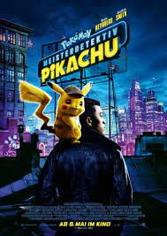
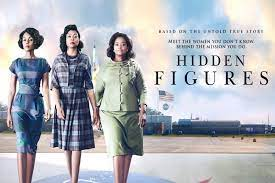

My Favorite Movies
When Thor's evil brother, Loki, gains access to the unlimited power of the energy cube called the Tesseract, Nick Fury, director of S.H.I.E.L.D., initiates a superhero recruitment effort to defeat the unprecedented threat to Earth. Joining Fury's "dream team" are Iron Man, Captain America, the Hulk, Thor , the Black Widow and Hawkeye.

After the death of his father, T'Challa returns home to the African nation of Wakanda to take his rightful place as king. When a powerful enemy suddenly reappears, T'Challa's mettle as king -- and as Black Panther -- gets tested when he's drawn into a conflict that puts the fate of Wakanda and the entire world at risk. Faced with treachery and danger, the young king must rally his allies and release the full power of Black Panther to defeat his foes and secure the safety of his people

Ace detective Harry Goodman goes mysteriously missing, prompting his 21-year-old son, Tim, to find out what happened. Aiding in the investigation is Harry's former Pokémon partner, wise-cracking, adorable super-sleuth Detective Pikachu. Finding that they are uniquely equipped to work together, as Tim is the only human who can talk with Pikachu, they join forces to unravel the tangled mystery.

Three brilliant African-American women at NASA -- Katherine Johnson, Dorothy Vaughan and Mary Jackson -- serve as the brains behind one of the greatest operations in history: the launch of astronaut John Glenn into orbit, a stunning achievement that restored the nation's confidence, turned around the Space Race and galvanized the world.
While working underground to fix a water main, Brooklyn plumbers and brothers Mario and Luigi are transported through a mysterious pipe to a magical new world. But when the siblings are separated, an epic adventure begins
Poppy discovers that Branch and his four brothers were once part of her favorite boy band. When one of his siblings, Floyd, gets kidnapped by a pair of nefarious villains, Branch and Poppy embark on a harrowing and emotional journey to reunite the other brothers and rescue Floyd from a fate even worse than pop culture obscurity.